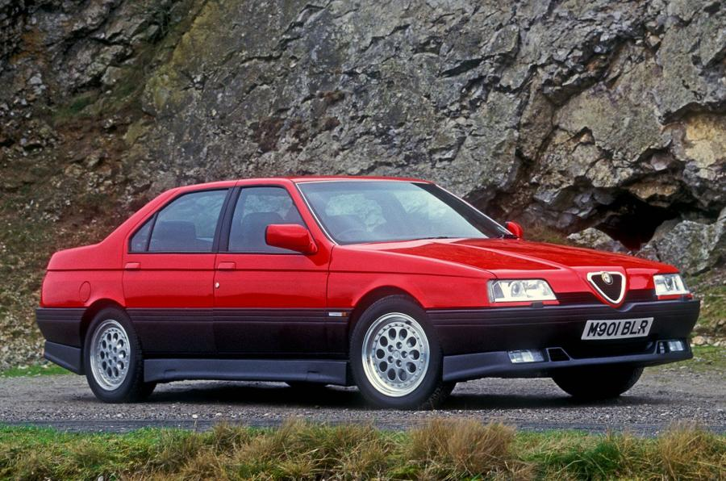
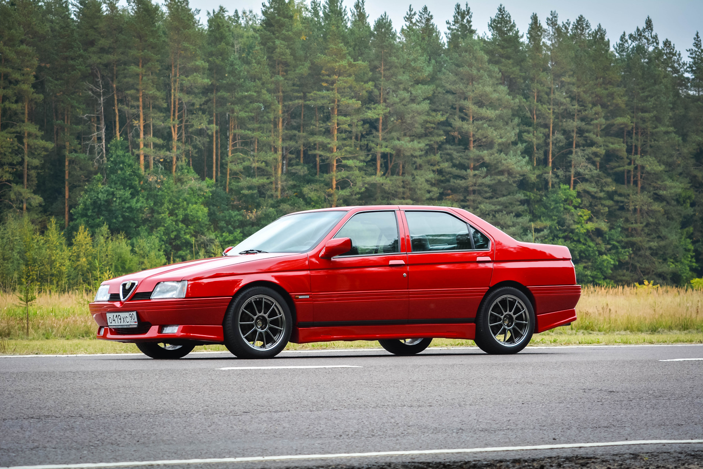
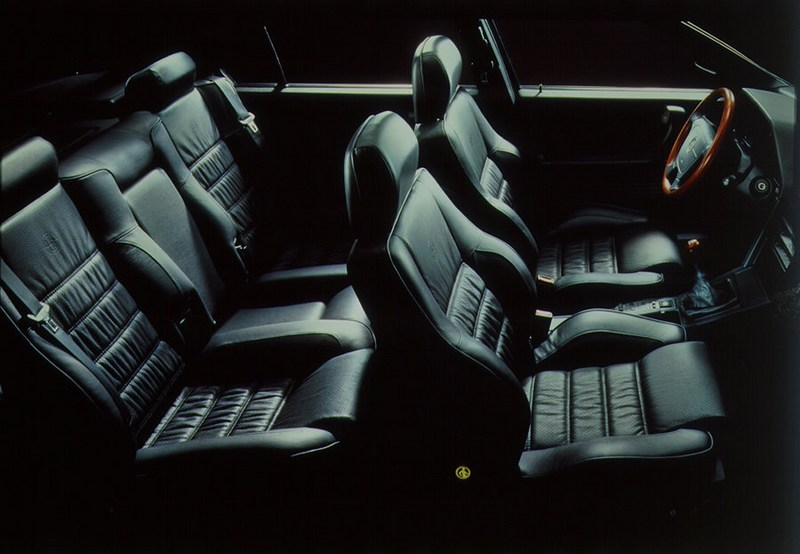

The Alfa Romeo 164 is a front wheel drive sedan with a Pininfarina body. The model was first presented at the Frankfurt Motor Show in 1987.
The appearance of the new flagship of the famous brand from Milan made a sensation at the 1987 Frankfurt Motor Show. The front-wheel drive 164 replaced the rear-wheel drive Alfa Romeo 6 and 90 sedans on the assembly line. The swift sporty look helped reduce aerodynamic drag, Cx was only 0.3. Straight and clear body lines are swift, elegant, recognizable.
The salon is an example of impeccable taste. Well-chosen colors of gray shades, upholstery of the interior, decided in the spirit of moderate chic, combined with excellent, even by the latest standards, ergonomics of the seats, allowed the model to hold out for a whole decade in that sector of the market in which the spoiled and wealthy consumer does not tolerate any inconsistency with modern fashion or lack of comfort.
During the long (until 1998) conveyor life, the body of the model was practically not modernized, its design turned out to be so classic. Only the engines changed: first there was a 2.0-liter Twin Spark with a capacity of 143 hp. with a dual ignition system, as well as a 2.5-liter 114-horsepower turbodiesel, but in the spring of 1988, a 3.0-liter V-shaped "six" (184 hp), aggregated with a five-speed manual gearbox, and with an automatic four-band transmission from ZF, as well as a turbocharged 2.0-liter 171-horsepower engine.
In August 1990, a new forced (200 hp) modification of the V6 Quadrifoglio Verde (QV) rolled off the assembly line with a pointedly swift appearance. The high dynamic qualities of this 3.0-liter engine, which sounds like a real Italian sports engine, can be supplemented with obedient dynamics. The one and a half ton sedan accelerates to 100 km / h in 8 seconds, and after another 20 seconds it overcomes the speed barrier of 200 km / h.
Further evolution was marked by the appearance in November 1992 of the Sport and Quadrifoglio Verde versions with 24-valve 3.0-liter "sixes" (210 and 232 hp, respectively) and a retouched front end (reduced headlight height)
These were the fastest versions of Alfa Romeo 164, the maximum speed of the most powerful reached 245 km/h. At the same time, the production of a 115-horsepower V6 turbodiesel was curtailed at the plant as not meeting environmental standards, and only at the beginning of 1994, when airbags and belt pretensioners began to be serially mounted on the 164th, did a more economical 2.5-liter 125- a powerful V6 turbodiesel known as the VM Super.
In April 1994, the 3.0-liter (232 hp) all-wheel drive model Alfa Romeo 164 04 began to be produced in a limited series, which at first enjoyed some success, but did not become popular.
  